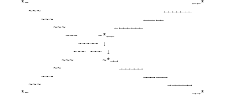

FormCalc/FeynArts
[1]:
from feynml.interface.formcalc.topologylist import TopologyList
from pyfeyn2.render.all import AllRender
from pyfeyn2.auto.position import auto_position
[2]:
tl = TopologyList.from_str(
'TopologyList[ Process -> {V[1], V[1]} -> {-F[3, {3, SequenceForm["Col", 3]}], F[3, {3, SequenceForm["Col", 4]}]}, Model -> {"SM"}, GenericModel -> {"Lorentz"}, InsertionLevel -> {Generic, Classes}, ExcludeParticles -> {}, ExcludeFieldPoints -> {FieldPoint[0][-F[1], F[2], -S[3]], FieldPoint[0][F[1], -F[2], S[3]], FieldPoint[0][-F[2], F[2], S[1]], FieldPoint[0][-F[2], F[2], S[2]], FieldPoint[0][-F[4], F[4], S[1]], FieldPoint[0][-F[4], F[4], S[2]], FieldPoint[1][-F[1], F[2], -S[3]], FieldPoint[1][F[1], -F[2], S[3]], FieldPoint[1][-F[2], F[2], S[1]], FieldPoint[1][-F[2], F[2], S[2]], FieldPoint[1][-F[4], F[4], S[1]], FieldPoint[1][-F[4], F[4], S[2]]}, LastSelections -> {}][Topology[1][Propagator[Incoming][Vertex[1][1], Vertex[3][5], Field[1]], Propagator[Incoming][Vertex[1][2], Vertex[3][6], Field[2]], Propagator[Outgoing][Vertex[1][3], Vertex[3][5], Field[3]], Propagator[Outgoing][Vertex[1][4], Vertex[3][6], Field[4]], Propagator[Internal][Vertex[3][5], Vertex[3][6], Field[5]]] -> Insertions[Generic][FeynmanGraph[1, Generic == 1][Field[1] -> V[1], Field[2] -> V[1], Field[3] -> F[3, {3, SequenceForm["Col", 3]}], Field[4] -> -F[3, {3, SequenceForm["Col", 4]}], Field[5] -> F] -> Insertions[Classes][FeynmanGraph[1, Classes == 1][Field[1] -> V[1], Field[2] -> V[1], Field[3] -> F[3, {3, SequenceForm["Col", 3]}], Field[4] -> -F[3, {3, SequenceForm["Col", 4]}], Field[5] -> F[3, {3, SequenceForm["Col", 3]}]]]],Topology[1][Propagator[Incoming][Vertex[1][1], Vertex[3][5], Field[1]], Propagator[Incoming][Vertex[1][2], Vertex[3][6], Field[2]], Propagator[Outgoing][Vertex[1][3], Vertex[3][6], Field[3]], Propagator[Outgoing][Vertex[1][4], Vertex[3][5], Field[4]], Propagator[Internal][Vertex[3][5], Vertex[3][6], Field[5]]] -> Insertions[Generic][FeynmanGraph[1, Generic == 1][Field[1] -> V[1], Field[2] -> V[1], Field[3] -> F[3, {3, SequenceForm["Col", 3]}], Field[4] -> -F[3, {3, SequenceForm["Col", 4]}], Field[5] -> F] -> Insertions[Classes][FeynmanGraph[1, Classes == 1][Field[1] -> V[1], Field[2] -> V[1], Field[3] -> F[3, {3, SequenceForm["Col", 3]}], Field[4] -> -F[3, {3, SequenceForm["Col", 4]}], Field[5] -> -F[3, {3, SequenceForm["Col", 3]}]]]]]'
)
fml = tl.to_feynml()
[3]:
fd = auto_position(fml.diagrams[0],layout="fdp")
AllRender(fd).render()
tikz:
pyx:
feynmp:
feynman:

dot:
asciipdf:
unicodepdf:
[4]:
fd = auto_position(fml.diagrams[1],layout="fdp")
AllRender(fd).render()
tikz:
pyx:
feynmp:
feynman:
dot:
asciipdf:
unicodepdf:

[ ]: